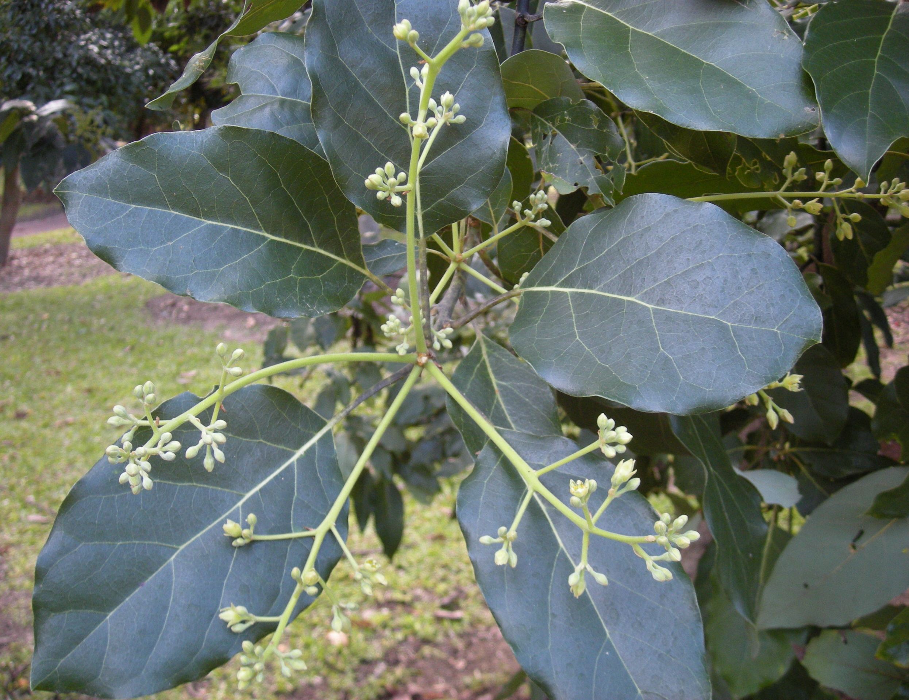
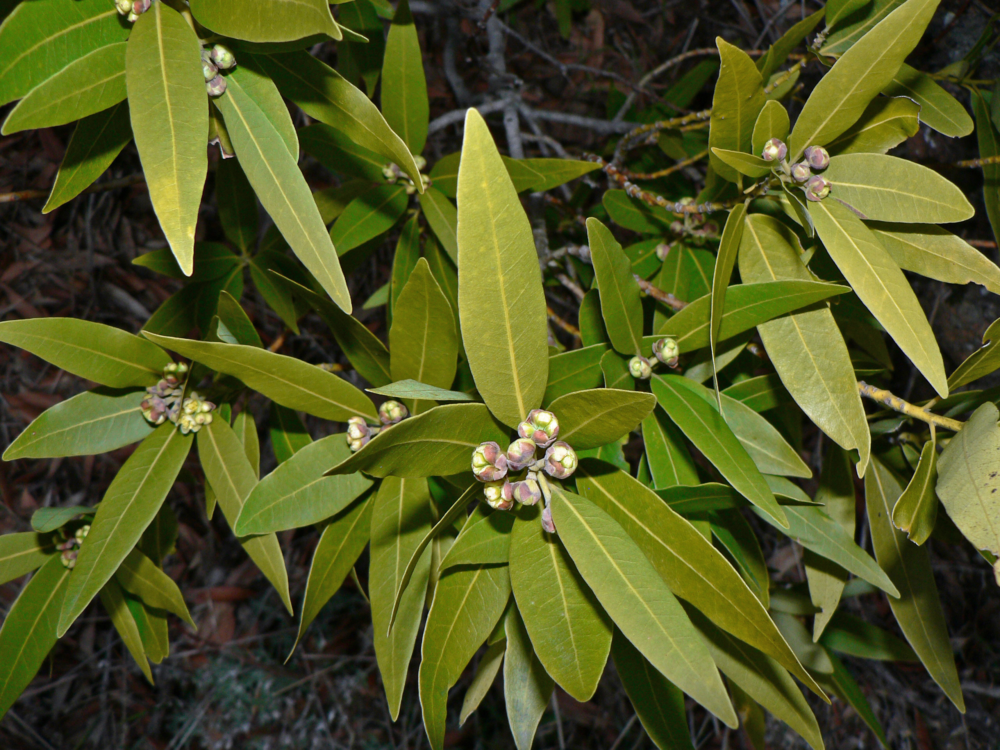
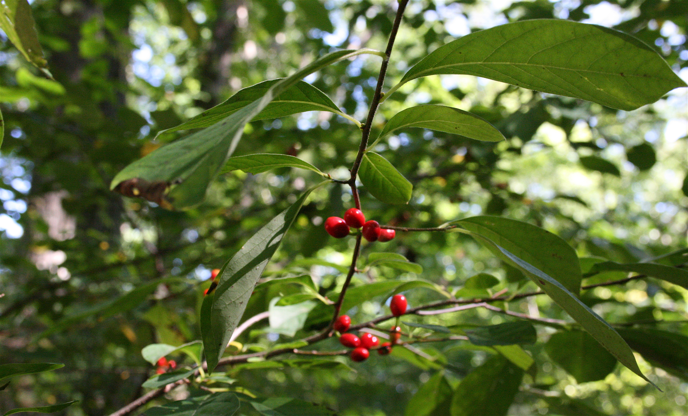
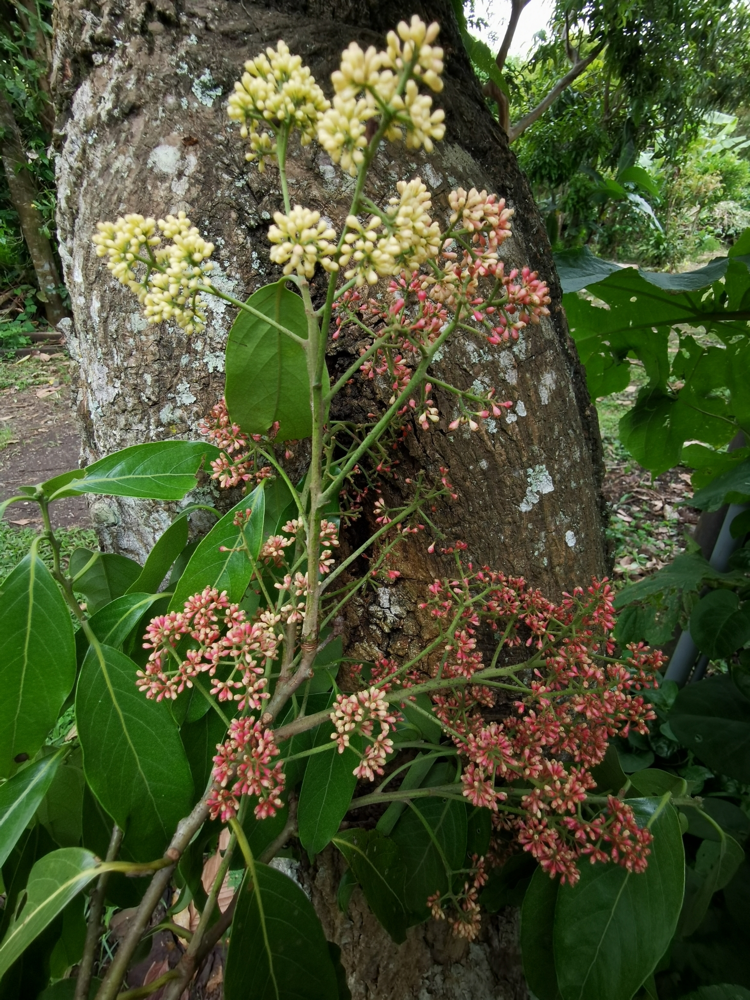
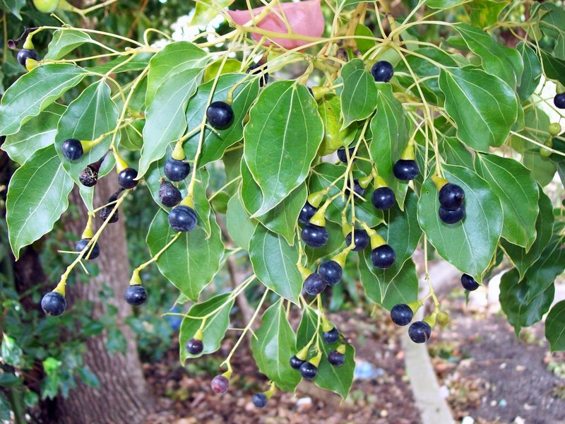
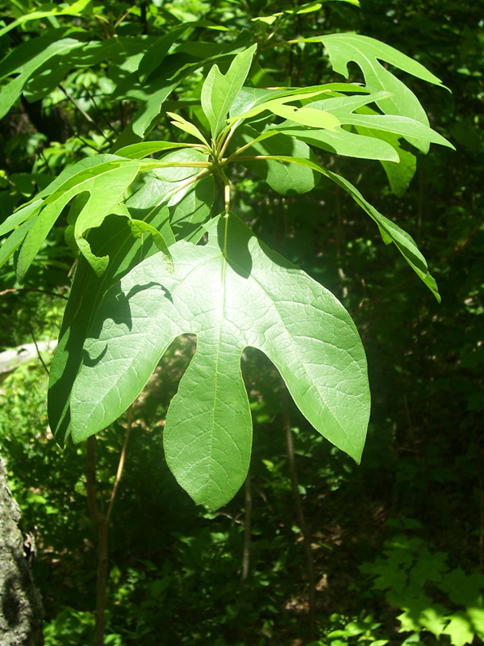

Lauraceae
laurel family
|  Persea americana (avocado) from Wikimedia Commons by Ethel Aardvark - Own work, CC BY 3.0 |
 Umbellularia californica (California bay tree) from Wikimedia Commons by Walter Siegmund - Own work, CC BY 2.5 |
|  Lindera benzoin (spicebush) from Wikimedia Commons by Cody Hough - Own work, CC BY-SA 3.0 |
 Licaria triandra (pepperleaf sweetwood) from Wikimedia Commons by Eduardo Chacón-Madrigal, CC BY 4.0 |
{kind=link}
{kind=link}
{kind=link}
{kind=link}
botanical characteristics
Botany in a Day, p. 53 | "Lauraceae", Wikipedia
- growth form
- usually evergreen trees and shrubs
- stems/leaves
- usually alternate leaves
- highly aromatic
- flowers
- small, bisexual flowers develop in panicles (branching clusters)
- 6 (rarely, 4) sepals in two whorls, usually greenish-yellow, yellow, or white
- no petals
- reproductive structures
- usually 9 stamens (anywhere from 3-12) appearing in whorls of 3
- ovary positioned superior, consisting of a single carpel
- matures as a drupe (fleshy fruit with a stony seed (e.g., avocado))
distribution
Botany in a Day, p. 53 | "Lauraceae", Wikipedia
- about 50 genera and 2500-3500 species worldwide
- family is ancient and was widely distributed on the Gondwana supercontinent, which consisted of around two-thirds of today's continental area, including South America, Africa, Antarctica, Australia, Zealandia, Arabia, and the Indian subcontinent
- modern species commonly occur in relict populations isolated by geographical barriers, for instance on islands or tropical mountains
- loss of habitat and overexploitation for such products has put many species in danger of extinction as a result of overcutting, extensive illegal logging, and habitat conversion
- some species, though commercially valuable in some countries, are regarded as aggressive invaders in other regions
- for example, Cinnamomum camphora, though a valued ornamental and medicinal plant, is so invasive as to have been declared a weed in subtropical forested areas of South Africa
ecological roles
"Lauraceae", Wikipedia
- fruits are an important food source for birds
- birds that are specialised frugivores tend to eat the whole fruit and regurgitate seeds intact, thereby releasing the seeds in favourable situations for germination
- seed dispersal of various species in the family is also carried out by monkeys, arboreal rodents, porcupines, opossums, and fishes
- leaves of some species in the Lauraceae have domatia (small chambers) in the axils of their veins that are home to certain mites and ants
- defense mechanisms that occur among members of the Lauraceae include irritant or toxic sap or tissues that repel or poison many herbivorous organisms
- trees of the family predominate in the world's laurel forests and cloud forests, which occur in tropical to mild temperate regions of both northern and southern hemispheres
- laurel wilt disease, caused by the virulent fungal pathogen Raffaelea lauricola, a native of southern Asia, spreads between hosts via a wood-boring beetle, Xyleborus glabratus, with which it has a symbiotic relationship
common pharmacological constituents
"Angiosperm families - Lauraceae Juss.", DELTA
- sugars transported as sucrose (e.g. Miscanteca (= Licaria)), or as oligosaccharides + sucrose (e.g. Sassafras), or as sugar alcohols + oligosaccharides + sucrose (e.g. Cinnamomum); inulin recorded; not cyanogenic; alkaloids present (commonly), or absent; arbutin absent; iridoids not detected; saponins/sapogenins absent; proanthocyanidins present (usually), or absent; when present, cyanidin; flavonols present; kaempferol and quercetin; ellagic acid absent (8 species, 7 genera); aluminium accumulation demonstrated; sieve-tube plastids P-type, or S-type; when P-type type I (b)
"Lauraceae", Wikipedia
- benzylisoquinoline alkaloids include aporphines and oxoaporphines, as well as derivatives of morphinans
- essential oils include terpenoids, benzyl benzoates, allylphenols, and propenylphenols
- lignans and neolignans are present, along with S-methyl-5-O-flavonoids, proanthocyanidins, cinnamoylamides, phenylpyrroles, styryl pyrones, polyketides (acetogenins), furanosesquiterpenes, and germacranolidous, heliangolidous, eudesmanolidous and guaianolidous sesquiterpene lactones
patterns in medicinal actions
- strong aromatic properties, bordering on overwhelming, grounding rather than transporting: puts you firmly back into your body
- stimulating action on the respiratory, digestive, and cardiovascular systems
- analgesic and anti-inflammatory; caustic and numbing, acts by burning away pain and inflammation: martian
traditional/cultural uses
"Lauraceae", Wikipedia
- many Lauraceae contain high concentrations of essential oils, some of which are valued for spices and perfumes
- some of the essential oils are valued as fragrances, such as in the traditional laurel wreath of classical antiquity, or in cabinet making, where the fragrant woods are prized for making insect-repellant furniture chests
- some are valued in cooking, for example, bay leaves and cinnamon are popular ingredients in European, American, and Asian cuisines
- avocados are important oil-rich fruit that are cultivated in warm climates around the world
- many species are exploited for timber
- some species are valued as sources of medicinal material
warnings
- internal use of aromatic essential oils can be extremely irritating and toxic and is not recommended
extra information
"Lauraceae", Wikipedia
- knowledge of the species comprising the Lauraceae is incomplete; the huge amount of variation within the family poses a major challenge for developing a reliable classification
prominent genera
- Camphora (camphor trees)
- Cinnamomum (cinnamons)
- Laurus (bay laurels)
- Lindera (spicebushes)
- Persea (incl. avocado)
- Sassafras (sassafrases)
- Umbellularia (California bay trees)
plant highlights
see list of materia medica entries here
Camphora officinarum
|  from Wikimedia Commons by Poyt448 Peter Woodard - Own work, CC0 |
common names: camphor tree en español: alcanforero |
{kind=link}
description
"Camphora officinarum", Wikipedia
- leaves have a glossy, waxy appearance and smell of camphor when crushed
- produces bright green foliage with masses of very small white fragrant flowers
- produces clusters of black, berry-like fruit
- pale bark is very rough and fissured vertically
distribution
"Camphora officinarum", Wikipedia
- native to China south of the Yangtze River, Taiwan, southern Japan, Korea, India, and Vietnam
- introduced to many other countries
medicinal/magical uses
The Modern Herbal Dispensatory, p. 202
- anti-inflammatory, antiseptic, antispasmodic, expectorant, warming, drying
- local anesthetic
- helps open congested air passages when inhaled
preparation methods
The Modern Herbal Dispensatory, p. 202
- tincture
- oil/salve
warnings
The Modern Herbal Dispensatory, p. 202
- use only as an inhalant or topically
- don't use topically during pregnancy or with children under two years old
- toxic when taken internally; internal use should be reserved for professionals only
Sassafras albidum
|  from Wikimedia Commons by Wowbobwow12 at the English-language Wikipedia, CC BY-SA 3.0 |
common names: sassafras en español: sasafrás |
{kind=link}
description
"Sassafras albidum", Wikipedia
- deciduous tree with thick, dark red-brown, and deeply furrowed bark
- leaves are alternate, green to yellow-green
- three different shapes (all of which can be on the same branch): three-lobed leaves, unlobed elliptical leaves, and two-lobed leaves (rarely, there can be more than three lobes)
- flowers are produced in loose, drooping, few-flowered racemes and are yellow to greenish-yellow, with five or six tepals
- fruit is a dark blue-black drupe containing a single seed
distribution
"Sassafras albidum", Wikipedia
- native to eastern North America, from southern Maine and southern Ontario west to Iowa, and south to central Florida and eastern Texas
- occurs throughout the eastern deciduous forest habitat type, at altitudes of up to 1,500 m (4,900 ft) above sea level
- formerly also occurred in southern Wisconsin, but is extirpated there as a native tree
medicinal/magical uses
"Sassafras albidum", Wikipedia
- featured in distinct national foods such as traditional root beer, filé powder, and Louisiana Cajun cuisine
- some Native American peoples used the leaves of sassafras to treat wounds by rubbing the leaves directly into a wound
- several parts of the plant have been used for many medicinal purposes such as treating acne, urinary disorders, and fevers
- bark has been used as a dye and as a flavoring
- used to treat ague (fevers) and sexually transmitted diseases such as syphilis and gonorrhea
preparation methods
"Sassafras albidum", Wikipedia
- infusion
- poultice
warnings
"Sassafras albidum", Wikipedia
- laboratory animals that were given oral doses of sassafras tea or sassafras oil that contained large doses of safrole developed permanent liver damage or various types of cancer
- in humans, liver damage can take years to develop and it may not have obvious signs
sources
"Angiosperm families - Lauraceae Juss." on DELTA - DEscription Language for TAxonomy. Retrieved 27 August 2025.
"Camphora officinarum" on Wikipedia. Retrieved 27 August 2025.
Easely, Thomas and Steven Horne. The Modern Herbal Dispensatory (2016)
Elpel, Thomas J. Botany in a Day: The Patterns Method of Plant Identification (2021)
Goldberg Blackthorn, Samantha. Ace of Cups Herbal Medicine and Botanical Magic Herbal School (2024)
"Lauraceae" on Wikipedia. Retrieved 27 August 2025.
"Sassafras albidum" on Wikipedia. Retrieved 27 August 2025.